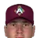
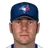
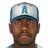
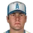
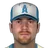

Franchise record book · ABL
Anaheim Angels
Seasons covered: 1961–2002. Only games played for this franchise count.
Read this first: seasons 1871–2001 are real MLB history that shipped with the OOTP file, mapped by OOTP onto this universe's 30 original franchises (club names as they were that season). 2002 is this universe, season to date (top tiers: MLB, ABL, FBL). Player names are as the export stores them; OOTP gives some historical players generated names.
Home runs
Hits
| # | Player | Season | Team | Hits |
|---|---|---|---|---|
| #1 |  Darin Erstad • | 2000 |  Anaheim Angels Anaheim Angels | 240 |
| #2 | 1970 | California Angels | 202 | |
| #3 | 2001 | Anaheim Angels | 194 | |
| #4 | 1997 | Anaheim Angels | 189 | |
| #5 | 1979 | California Angels | 188 | |
| #6 | 1999 | Anaheim Angels | 188 | |
| #7 | 1962 | Los Angeles Angels | 186 | |
| #8 | 1979 | California Angels | 186 | |
| #9 | 2000 | Anaheim Angels | 185 | |
| #10 | 1988 | California Angels | 184 |
RBI
| # | Player | Season | Team | RBI |
|---|---|---|---|---|
| #1 | 1979 | California Angels | 139 | |
| #2 | 1997 | Anaheim Angels | 129 | |
| #3 | 2001 | Anaheim Angels | 123 | |
| #4 | 1987 | California Angels | 117 | |
| #5 | 2000 | Anaheim Angels | 117 | |
| #6 | 2000 | Anaheim Angels | 117 | |
| #7 | 1977 | California Angels | 115 | |
| #8 | 1993 | California Angels | 112 | |
| #9 | 1999 | Anaheim Angels | 108 | |
| #10 | 2001 | Anaheim Angels | 108 |
Runs
| # | Player | Season | Team | Runs |
|---|---|---|---|---|
| #1 | Darin Erstad • | 2000 | Anaheim Angels | 121 |
| #2 | 1979 | California Angels | 120 | |
| #3 |  Jim Edmonds • | 1995 | California Angels | 120 |
| #4 | 2000 | Anaheim Angels | 120 | |
| #5 | 1995 | California Angels | 119 | |
| #6 | 1962 | Los Angeles Angels | 115 | |
| #7 | Jim Edmonds • | 1998 | Anaheim Angels | 115 |
| #8 | 1979 | California Angels | 114 | |
| #9 | 1995 | California Angels | 111 | |
| #10 | 1987 | California Angels | 110 |
Stolen bases
Doubles
Triples
Walks
Total bases
| # | Player | Season | Team | Total bases |
|---|---|---|---|---|
| #1 | Darin Erstad • | 2000 | Anaheim Angels | 366 |
| #2 | 2000 | Anaheim Angels | 340 | |
| #3 | 2000 | Anaheim Angels | 336 | |
| #4 | 1979 | California Angels | 333 | |
| #5 | 2001 | Anaheim Angels | 321 | |
| #6 | 1995 | California Angels | 319 | |
| #7 | 1982 | California Angels | 315 | |
| #8 | 2001 | Anaheim Angels | 312 | |
| #9 | 1977 | California Angels | 308 | |
| #10 | 2000 | Anaheim Angels | 307 |
Batting average qualified
| # | Player | Season | Team | Batting average |
|---|---|---|---|---|
| #1 |  Marquis Grissom • | 2002 (ABL) | Anaheim Angels | .386 |
| #2 | Darin Erstad • | 2000 | Anaheim Angels | .355 |
| #3 | Jose Valentin • | 2002 (ABL) | Anaheim Angels | .353 |
| #4 |  Scott Podsednik • | 2002 (ABL) | Anaheim Angels | .352 |
| #5 | 1983 | California Angels | .339 | |
| #6 | 1980 | California Angels | .331 | |
| #7 | 1995 | California Angels | .330 | |
| #8 | 1970 | California Angels | .329 | |
| #9 | 2002 (ABL) | Anaheim Angels | .328 | |
| #10 | Austin Kearns • | 2002 (ABL) | Anaheim Angels | .327 |
On-base % qualified
| # | Player | Season | Team | On-base % |
|---|---|---|---|---|
| #1 | 1995 | California Angels | .429 | |
| #2 | 1995 | California Angels | .429 | |
| #3 | 1961 | Los Angeles Angels | .420 | |
| #4 | 1979 | California Angels | .418 | |
| #5 | Marquis Grissom • | 2002 (ABL) | Anaheim Angels | .416 |
| #6 | 1994 | California Angels | .410 | |
| #7 | 1998 | Anaheim Angels | .410 | |
| #8 | Darin Erstad • | 2000 | Anaheim Angels | .409 |
| #9 | 1983 | California Angels | .409 | |
| #10 | Scott Podsednik • | 2002 (ABL) | Anaheim Angels | .409 |
Slugging % qualified
| # | Player | Season | Team | Slugging % |
|---|---|---|---|---|
| #1 | 2000 | Anaheim Angels | .604 | |
| #2 | 1995 | California Angels | .594 | |
| #3 | Jose Valentin • | 2002 (ABL) | Anaheim Angels | .590 |
| #4 | Marquis Grissom • | 2002 (ABL) | Anaheim Angels | .570 |
| #5 | Austin Kearns • | 2002 (ABL) | Anaheim Angels | .566 |
| #6 | 1994 | California Angels | .561 | |
| #7 | 1982 | California Angels | .548 | |
| #8 | 1981 | California Angels | .543 | |
| #9 | Darin Erstad • | 2000 | Anaheim Angels | .541 |
| #10 | 2000 | Anaheim Angels | .540 |
OPS qualified
| # | Player | Season | Team | OPS |
|---|---|---|---|---|
| #1 | 1995 | California Angels | 1.024 | |
| #2 | 2000 | Anaheim Angels | 1.008 | |
| #3 | Jose Valentin • | 2002 (ABL) | Anaheim Angels | .989 |
| #4 | Marquis Grissom • | 2002 (ABL) | Anaheim Angels | .986 |
| #5 | 1994 | California Angels | .971 | |
| #6 | Austin Kearns • | 2002 (ABL) | Anaheim Angels | .954 |
| #7 | Darin Erstad • | 2000 | Anaheim Angels | .951 |
| #8 | 2000 | Anaheim Angels | .945 | |
| #9 | 1998 | Anaheim Angels | .943 | |
| #10 | 1995 | California Angels | .943 |
WAR (OOTP)
Wins
Strikeouts
Saves
Innings
| # | Player | Season | Team | Innings |
|---|---|---|---|---|
| #1 | 1974 | California Angels | 332.2 | |
| #2 | 1973 | California Angels | 326.0 | |
| #3 | 1973 | California Angels | 315.2 | |
| #4 | 1977 | California Angels | 299.0 | |
| #5 | 1976 | California Angels | 288.1 | |
| #6 | 1976 | California Angels | 284.1 | |
| #7 | 1972 | California Angels | 284.0 | |
| #8 | 1964 | Los Angeles Angels | 278.1 | |
| #9 | 1971 | California Angels | 276.2 | |
| #10 | 1971 | California Angels | 276.2 |
Complete games
Shutouts
ERA qualified
| # | Player | Season | Team | ERA |
|---|---|---|---|---|
| #1 | 1964 | Los Angeles Angels | 1.65 | |
| #2 | 1972 | California Angels | 2.28 | |
| #3 | 1990 | California Angels | 2.40 | |
| #4 | 1976 | California Angels | 2.43 | |
| #5 | 1969 | California Angels | 2.52 | |
| #6 | 1977 | California Angels | 2.54 | |
| #7 | 1965 | California Angels | 2.56 | |
| #8 | 1989 | California Angels | 2.57 | |
| #9 | 1967 | California Angels | 2.59 | |
| #10 | 1975 | California Angels | 2.62 |
WHIP qualified
| # | Player | Season | Team | WHIP |
|---|---|---|---|---|
| #1 | 1976 | California Angels | 0.99 | |
| #2 | 1964 | Los Angeles Angels | 1.01 | |
| #3 | 1968 | California Angels | 1.06 | |
| #4 | 1969 | California Angels | 1.08 | |
| #5 | 1986 | California Angels | 1.08 | |
| #6 | 1977 | California Angels | 1.09 | |
| #7 | 1975 | California Angels | 1.10 | |
| #8 | 1965 | California Angels | 1.11 | |
| #9 | 1965 | California Angels | 1.11 | |
| #10 | 1971 | California Angels | 1.11 |
K/9 qualified
| # | Player | Season | Team | K/9 |
|---|---|---|---|---|
| #1 | 1973 | California Angels | 10.6 | |
| #2 | 1972 | California Angels | 10.4 | |
| #3 | 1976 | California Angels | 10.4 | |
| #4 | 1977 | California Angels | 10.3 | |
| #5 | 1978 | California Angels | 10.0 | |
| #6 | 1974 | California Angels | 9.9 | |
| #7 | 1975 | California Angels | 9.4 | |
| #8 | 1979 | California Angels | 9.0 | |
| #9 |  Ryan Dempster • | 2002 (ABL) | Anaheim Angels | 8.9 |
| #10 | 1995 | California Angels | 8.6 |
WAR (OOTP)
Home runs
| # | Player | Years | Home runs |
|---|---|---|---|
| #1 | 1992–02 | 247 | |
| #2 | 1973–92 | 222 | |
| #3 | 1981–99 | 156 | |
| #4 | 1970–86 | 154 | |
| #5 | 1970–88 | 141 | |
| #6 | 1994–02 | 135 | |
| #7 | 1973–87 | 130 | |
| #8 | 1967–87 | 123 | |
| #9 | Jim Edmonds • | 1993–02 | 121 |
| #10 | 1998–02 | 118 |
Hits
| # | Player | Years | Hits |
|---|---|---|---|
| #1 | 1973–92 | 1588 | |
| #2 | 1961–78 | 1408 | |
| #3 | 1992–02 | 1288 | |
| #4 | 1994–02 | 1237 | |
| #5 | 1970–86 | 1103 | |
| #6 | 1981–99 | 973 | |
| #7 | 1967–85 | 968 | |
| #8 | 1990–02 | 966 | |
| #9 | 1986–01 | 961 | |
| #10 | Darin Erstad • | 1996–02 | 930 |
RBI
| # | Player | Years | RBI |
|---|---|---|---|
| #1 | 1973–92 | 846 | |
| #2 | 1992–02 | 806 | |
| #3 | 1994–02 | 633 | |
| #4 | 1981–99 | 618 | |
| #5 | 1970–86 | 557 | |
| #6 | 1961–78 | 546 | |
| #7 | 1986–01 | 532 | |
| #8 | 1970–88 | 523 | |
| #9 | 1973–87 | 481 | |
| #10 | Jim Edmonds • | 1993–02 | 408 |
Runs
| # | Player | Years | Runs |
|---|---|---|---|
| #1 | 1973–92 | 889 | |
| #2 | 1992–02 | 779 | |
| #3 | 1961–78 | 691 | |
| #4 | 1970–86 | 601 | |
| #5 | 1994–02 | 530 | |
| #6 | 1981–99 | 520 | |
| #7 | Darin Erstad • | 1996–02 | 511 |
| #8 | 1970–88 | 481 | |
| #9 | 1967–85 | 474 | |
| #10 | 1986–01 | 469 |
Stolen bases
| # | Player | Years | Stolen bases |
|---|---|---|---|
| #1 | 1982–92 | 186 | |
| #2 | 1987–02 | 174 | |
| #3 | 1964–78 | 139 | |
| #4 | 1970–84 | 126 | |
| #5 | 1985–01 | 123 | |
| #6 | 1992–01 | 116 | |
| #7 | Darin Erstad • | 1996–02 | 111 |
| #8 | 1975–84 | 110 | |
| #9 | 1983–96 | 99 | |
| #10 | 1970–88 | 89 |
Doubles
| # | Player | Years | Doubles |
|---|---|---|---|
| #1 | 1973–92 | 282 | |
| #2 | 1992–02 | 252 | |
| #3 | 1994–02 | 244 | |
| #4 | 1961–78 | 219 | |
| #5 | 1990–02 | 186 | |
| #6 | 1970–86 | 183 | |
| #7 | 1986–01 | 175 | |
| #8 | Darin Erstad • | 1996–02 | 174 |
| #9 | 1981–99 | 167 | |
| #10 | Jim Edmonds • | 1993–02 | 161 |
Triples
| # | Player | Years | Triples |
|---|---|---|---|
| #1 | 1961–78 | 70 | |
| #2 | 1970–84 | 32 | |
| #3 | 1987–02 | 27 | |
| #4 | 1983–96 | 27 | |
| #5 | 1964–72 | 25 | |
| #6 | 1985–01 | 24 | |
| #7 | 1982–92 | 23 | |
| #8 | 1973–92 | 22 | |
| #9 | 1967–85 | 22 | |
| #10 | 1990–02 | 20 |
Walks
| # | Player | Years | Walks |
|---|---|---|---|
| #1 | 1973–92 | 866 | |
| #2 | 1992–02 | 779 | |
| #3 | 1970–86 | 630 | |
| #4 | 1961–78 | 558 | |
| #5 | 1981–99 | 493 | |
| #6 | 1967–85 | 405 | |
| #7 | 1958–66 | 369 | |
| #8 | 1967–87 | 362 | |
| #9 | 1986–01 | 336 | |
| #10 | 1983–96 | 335 |
Total bases
| # | Player | Years | Total bases |
|---|---|---|---|
| #1 | 1973–92 | 2580 | |
| #2 | 1992–02 | 2315 | |
| #3 | 1961–78 | 2112 | |
| #4 | 1994–02 | 1926 | |
| #5 | 1970–86 | 1788 | |
| #6 | 1981–99 | 1620 | |
| #7 | 1986–01 | 1511 | |
| #8 | Darin Erstad • | 1996–02 | 1402 |
| #9 | 1970–88 | 1390 | |
| #10 | 1973–87 | 1334 |
Batting average min 2,000 PA
| # | Player | Years | Batting average |
|---|---|---|---|
| #1 | 1967–85 | .314 | |
| #2 | 1994–02 | .296 | |
| #3 | 1987–02 | .294 | |
| #4 | Darin Erstad • | 1996–02 | .293 |
| #5 | Jim Edmonds • | 1993–02 | .290 |
| #6 | 1986–01 | .286 | |
| #7 | 1992–02 | .285 | |
| #8 | 1981–99 | .279 | |
| #9 | 1958–66 | .275 | |
| #10 | 1973–92 | .271 |
On-base % min 2,000 PA
| # | Player | Years | On-base % |
|---|---|---|---|
| #1 | 1967–85 | .393 | |
| #2 | 1992–02 | .391 | |
| #3 | 1958–66 | .379 | |
| #4 | 1973–92 | .372 | |
| #5 | 1970–86 | .370 | |
| #6 | 1981–99 | .365 | |
| #7 | 1998–02 | .361 | |
| #8 | Jim Edmonds • | 1993–02 | .359 |
| #9 | Darin Erstad • | 1996–02 | .352 |
| #10 | 1986–01 | .350 |
Slugging % min 2,000 PA
| # | Player | Years | Slugging % |
|---|---|---|---|
| #1 | 1992–02 | .511 | |
| #2 | 1998–02 | .508 | |
| #3 | Jim Edmonds • | 1993–02 | .498 |
| #4 | 1981–99 | .464 | |
| #5 | 1973–87 | .463 | |
| #6 | 1994–02 | .461 | |
| #7 | 1986–01 | .450 | |
| #8 | 1970–88 | .448 | |
| #9 | Darin Erstad • | 1996–02 | .441 |
| #10 | 1973–92 | .441 |
OPS min 2,000 PA
| # | Player | Years | OPS |
|---|---|---|---|
| #1 | 1992–02 | .903 | |
| #2 | 1998–02 | .869 | |
| #3 | Jim Edmonds • | 1993–02 | .856 |
| #4 | 1981–99 | .829 | |
| #5 | 1973–92 | .813 | |
| #6 | 1970–86 | .806 | |
| #7 | 1986–01 | .801 | |
| #8 | 1973–87 | .798 | |
| #9 | Darin Erstad • | 1996–02 | .794 |
| #10 | 1994–02 | .786 |
WAR (OOTP)
| # | Player | Years | WAR (OOTP) |
|---|---|---|---|
| #1 | 1973–92 | 43.3 | |
| #2 | 1961–78 | 39.7 | |
| #3 | 1992–02 | 38.3 | |
| #4 | 1970–86 | 28.8 | |
| #5 | 1981–99 | 19.8 | |
| #6 | 1986–01 | 19.2 | |
| #7 | 1970–88 | 18.0 | |
| #8 | 1967–85 | 17.7 | |
| #9 | Jim Edmonds • | 1993–02 | 15.6 |
| #10 | 1973–87 | 15.4 |
Wins
| # | Player | Years | Wins |
|---|---|---|---|
| #1 | 1986–02 | 165 | |
| #2 | 1966–93 | 138 | |
| #3 | 1981–93 | 109 | |
| #4 | 1973–93 | 102 | |
| #5 | 1984–99 | 88 | |
| #6 | 1966–75 | 87 | |
| #7 | 1985–96 | 78 | |
| #8 | 1961–71 | 74 | |
| #9 | 1968–79 | 59 | |
| #10 | 1956–71 | 54 |
Strikeouts
| # | Player | Years | Strikeouts |
|---|---|---|---|
| #1 | 1966–93 | 2416 | |
| #2 | 1986–02 | 2151 | |
| #3 | 1981–93 | 1283 | |
| #4 | 1973–93 | 1233 | |
| #5 | 1984–99 | 1112 | |
| #6 | 1961–71 | 857 | |
| #7 | 1965–83 | 844 | |
| #8 | 1968–79 | 768 | |
| #9 | 1985–96 | 714 | |
| #10 | 1956–71 | 678 |
Saves
| # | Player | Years | Saves |
|---|---|---|---|
| #1 | 1995–02 | 210 | |
| #2 | 1987–95 | 126 | |
| #3 | 1970–83 | 65 | |
| #4 | 1975–88 | 61 | |
| #5 | 1964–68 | 58 | |
| #6 | 1990–99 | 45 | |
| #7 | 1966–68 | 43 | |
| #8 | 1969–74 | 39 | |
| #9 | 1980–97 | 37 | |
| #10 | 1954–64 | 27 |
Innings
| # | Player | Years | Innings |
|---|---|---|---|
| #1 | 1986–02 | 2675.0 | |
| #2 | 1966–93 | 2181.1 | |
| #3 | 1981–93 | 1965.1 | |
| #4 | 1973–93 | 1615.1 | |
| #5 | 1984–99 | 1445.1 | |
| #6 | 1966–75 | 1403.1 | |
| #7 | 1961–71 | 1236.2 | |
| #8 | 1985–96 | 1221.0 | |
| #9 | 1965–83 | 1138.2 | |
| #10 | 1989–99 | 1073.2 |
Complete games
| # | Player | Years | Complete games |
|---|---|---|---|
| #1 | 1966–93 | 156 | |
| #2 | 1973–93 | 92 | |
| #3 | 1981–93 | 70 | |
| #4 | 1986–02 | 57 | |
| #5 | 1966–75 | 51 | |
| #6 | 1961–71 | 48 | |
| #7 | 1973–85 | 42 | |
| #8 | 1968–79 | 42 | |
| #9 | 1965–83 | 35 | |
| #10 | 1964–77 | 35 |
Shutouts
| # | Player | Years | Shutouts |
|---|---|---|---|
| #1 | 1966–93 | 40 | |
| #2 | 1973–93 | 24 | |
| #3 | 1961–71 | 21 | |
| #4 | 1956–71 | 14 | |
| #5 | 1986–02 | 14 | |
| #6 | 1973–85 | 13 | |
| #7 | 1965–83 | 12 | |
| #8 | 1985–96 | 11 | |
| #9 | 1968–79 | 11 | |
| #10 | 1981–93 | 10 |
ERA min 500 IP
| # | Player | Years | ERA |
|---|---|---|---|
| #1 | 1968–79 | 2.78 | |
| #2 | 1961–71 | 2.83 | |
| #3 | 1966–93 | 3.07 | |
| #4 | 1973–93 | 3.08 | |
| #5 | 1956–71 | 3.13 | |
| #6 | 1976–84 | 3.27 | |
| #7 | 1966–75 | 3.28 | |
| #8 | 1965–73 | 3.37 | |
| #9 | 1962–67 | 3.41 | |
| #10 | 1973–85 | 3.64 |
WHIP min 500 IP
| # | Player | Years | WHIP |
|---|---|---|---|
| #1 | 1968–79 | 1.14 | |
| #2 | 1973–93 | 1.17 | |
| #3 | 1956–71 | 1.20 | |
| #4 | 1965–73 | 1.21 | |
| #5 | 1962–67 | 1.22 | |
| #6 | 1961–71 | 1.23 | |
| #7 | 1970–86 | 1.25 | |
| #8 | 1970–92 | 1.25 | |
| #9 | 1966–75 | 1.25 | |
| #10 | 1968–79 | 1.27 |
K/9 min 500 IP
| # | Player | Years | K/9 |
|---|---|---|---|
| #1 | 1966–93 | 10.0 | |
| #2 | 1986–02 | 7.2 | |
| #3 | 1968–79 | 7.1 | |
| #4 | 1984–99 | 6.9 | |
| #5 | 1973–93 | 6.9 | |
| #6 | 1970–83 | 6.8 | |
| #7 | 1965–83 | 6.7 | |
| #8 | 1961–71 | 6.2 | |
| #9 | 1964–77 | 5.9 | |
| #10 | 1981–93 | 5.9 |
WAR (OOTP)
| # | Player | Years | WAR (OOTP) |
|---|---|---|---|
| #1 | 1966–93 | 53.5 | |
| #2 | 1986–02 | 46.0 | |
| #3 | 1981–93 | 36.3 | |
| #4 | 1973–93 | 35.8 | |
| #5 | 1961–71 | 28.6 | |
| #6 | 1984–99 | 25.6 | |
| #7 | 1968–79 | 20.4 | |
| #8 | 1965–83 | 17.7 | |
| #9 | 1989–99 | 17.5 | |
| #10 | 1985–96 | 17.3 |
The franchise's best real-history seasons by winning percentage.
| Season | Club | W | L | PCT | Postseason |
|---|---|---|---|---|---|
| 1982 | California Angels | 93 | 69 | .574 | Playoffs |
| 1986 | California Angels | 92 | 70 | .568 | Playoffs |
| 1989 | California Angels | 91 | 71 | .562 | |
| 1985 | California Angels | 90 | 72 | .556 | |
| 1979 | California Angels | 88 | 74 | .543 | Playoffs |
| 1995 | California Angels | 78 | 67 | .538 | |
| 1978 | California Angels | 87 | 75 | .537 | |
| 1962 | Los Angeles Angels | 86 | 76 | .531 | |
| 1970 | California Angels | 86 | 76 | .531 | |
| 1998 | Anaheim Angels | 85 | 77 | .525 |